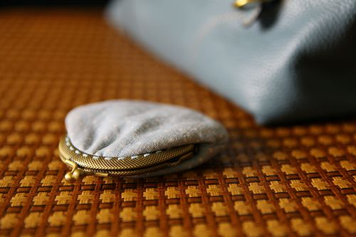

慢悠悠地夏季。 @ Jun 24, 2010
小原子给我做的口金包，装硬币零钱很方便，与上班包的颜色很搭。

箱子今天问“谁家还用这个？”
我家还用。

性感的小土豆，从肉体到情感都很性感。

晚饭后我最喜欢做的事儿：点蚊香。

进入夏季，叶片疯狂生长的滴水观音，午后的叶片下也有凉意。

小原子给我做的口金包，装硬币零钱很方便，与上班包的颜色很搭。

箱子今天问“谁家还用这个？”
我家还用。
性感的小土豆，从肉体到情感都很性感。
晚饭后我最喜欢做的事儿：点蚊香。
进入夏季，叶片疯狂生长的滴水观音，午后的叶片下也有凉意。
« 鹌鹑引发的杯具。 | DRESS BLOG »
13 Responses to “慢悠悠地夏季。”
2010-06-23
哈哈~~我的小口金又被表扬了…….躺在那和你家土豆一样可爱。。。滴水观音好像真的在滴水哎~~
2010-06-23
我喜欢那口金包上的线迹！
2010-06-23
请教一下茶，我们家的滴水观音总是折枝，一盆折的都不余几只了，要怎么养滴水观音呢？多长时间浇水，浇多少水，要晒太阳吗？谢谢
2010-06-23
平时我自拍时也喜欢找土豆这种角度，显得脸小眼睛大……
2010-06-23
妈呀，才发现把“滴水观音”写成“铁观音”，呵呵~养任何植物都不能太涝，会烂根。
夏季，应该将花盆放在半阴通风处，并经常向周围及叶面喷水，以加大空气湿度，降低叶片温度，保持叶片清洁。滴水观音生长非常快，施肥适量，每月施1-2次氮、磷、钾的薄肥就好。
滴水观音喜阴，不要让阳光直射。适量给滴水观音追施“硫酸亚铁”，可以使滴水观音叶片变大、变厚、变绿，平滑有光泽，叶柄不易伸长，保证叶片美观。
2010-06-23
报告：养薄荷可以甩浇水。。。。
2010-06-23
很清爽~夏天看正合适.
2010-06-23
茶，你乃神速也！
滴水观音叶子杆太长的时候，可以拿绳子轻绕几圈固定。
2010-06-24
谢谢各位的回复了~我今天就去买肥去，我从来只浇水不施肥的，哈哈
2010-06-24
看到这一片绿意，好舒服哦~
2010-06-24
第二张是虾米高科技？太阳能雨伞？
2010-06-24
俺们也喜欢点蚊香的，许久没有做过的事了。
2010-06-24
好茁壮的滴水观音，好有爱的口金包
Leave A Reply
存档只读，评论已关闭。